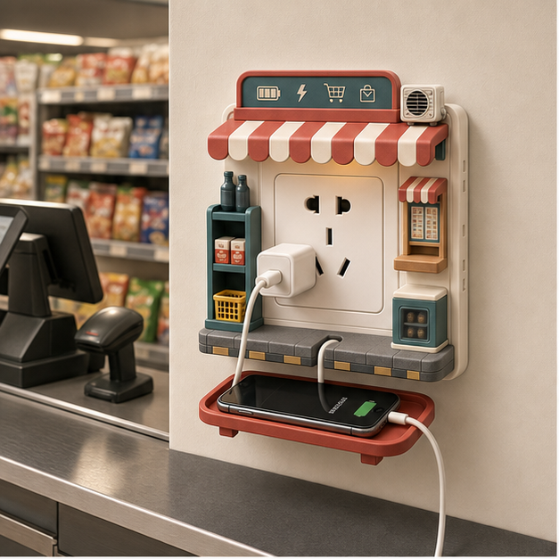
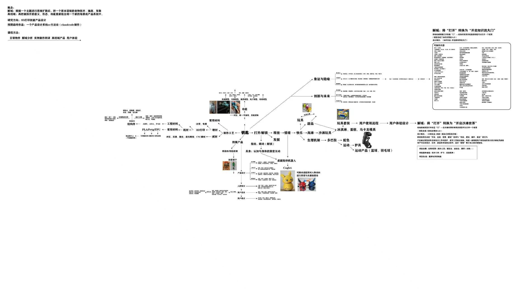
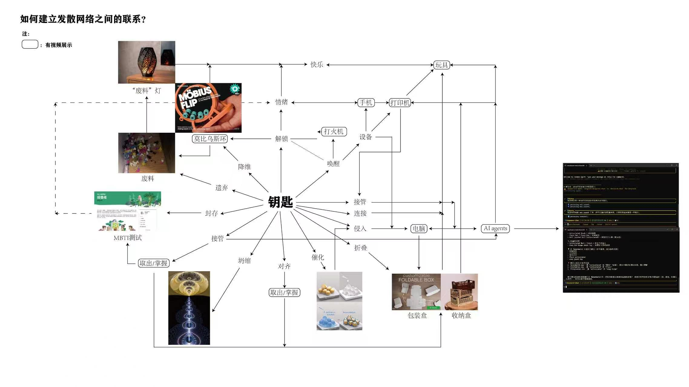
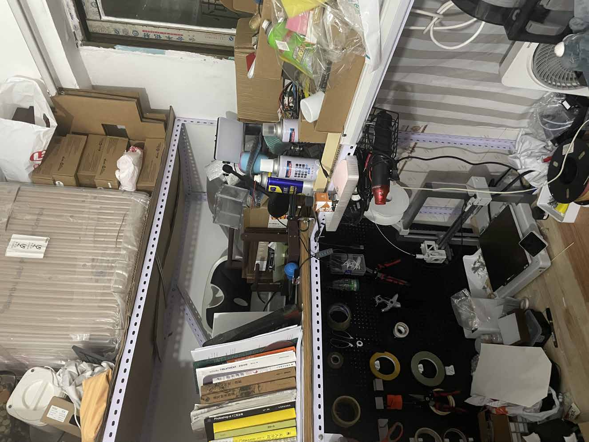

Course Final Website / Key De-domain
一把钥匙，打开六周研究。
这个项目从一把普通钥匙出发，经历六个阶段：先观察它作为物件的结构与使用，再扩展语义边界，收束成设计线索，回到制作现场，转向日常情绪机关，并最终推进到空间功能界面的双线落地。

Research Path
六周研究从物件、语义走向方法、现场、情绪机关与落地验证。
01
Week 01
钥匙作为物件：结构、材料、功能与体验
从钥匙的手柄、匙身、牙花、挂孔、材料、制造方式和使用动作入手，建立最初的解域基础。
进入第一周 02Week 02
钥匙作为语义：什么能被解锁，什么能成为钥匙
把钥匙从名词转成动词，加入宿舍钥匙、忘带钥匙、电子门禁等个人经历，让汇报更像真实研究。
进入第二周 03Week 03
钥匙作为方法：发散网络与设计收束
把前两周得到的结构、动词和场景重新连接，形成更清晰的设计判断与后续实验路径。
进入第三周 04Week 04
钥匙作为制作链路：工作台、材料与 3D 打印现场
把钥匙的“打开”放回真实制作环境，观察桌面、工具、打印机和材料如何共同打开样机过程。
进入第四周 05Week 05
钥匙作为情绪机关：让日常动作产生被动情绪价值
从主动调节情绪转向日常功能中的趣味反馈，把开关、插座、门把手和钥匙挂钩做成系列文创。
进入第五周 06Week 06
钥匙作为落地方法：结构机关与装饰模块双线推进
把空间功能界面拆成结构情绪机关和装饰情绪模块，完成效果方案、参数化建模和白模验证。
进入第六周Archive
作业图与 PDF 保留为研究证据。
这些档案分别记录了物件拆解、语义扩展、网络收束、制作现场观察、日常情绪机关和落地验证，让研究从一把钥匙逐渐展开成完整的设计叙事。



